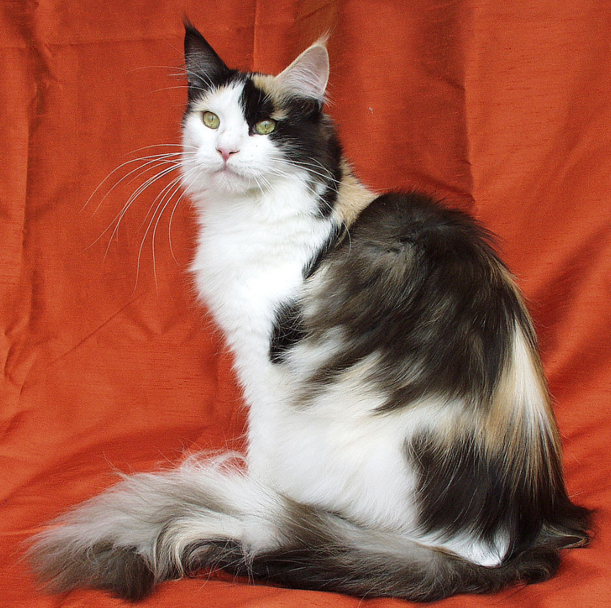
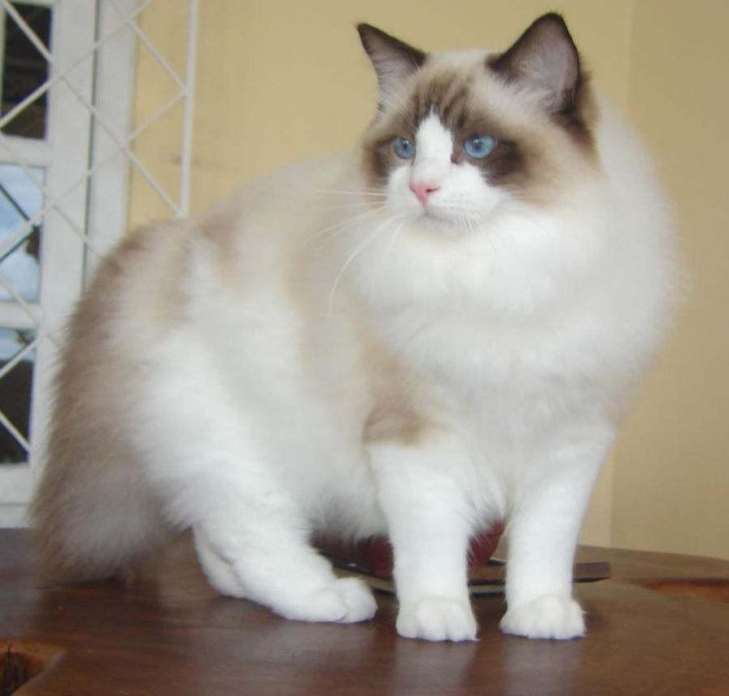
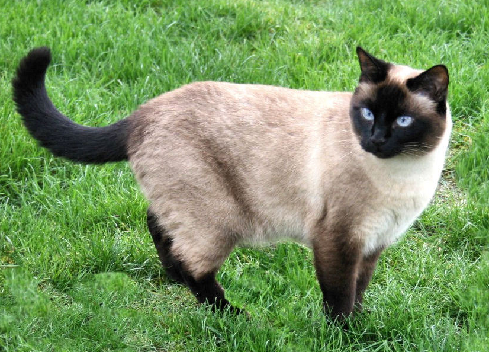

Maine Coon

A Maine Coon az egyik legnagyobb termetű házimacska fajta, hosszú,
sűrű bundával és bozontos farokkal. Barátságos, intelligens és játékos
természetű, ezért kiváló családi kedvenc. Jó vadászképességekkel
rendelkezik, és jól tűri a hideget.
Ragdoll

A Ragdoll egy nagytestű, hosszú szőrű macskafajta, amely nevét arról
kapta, hogy ölbe véve gyakran teljesen elernyed. Rendkívül szelíd,
bújós és emberközpontú, így tökéletes lakáscica. Szemei általában
kékek, bundája puha és félhosszú.
Sziámi

A sziámi macska karcsú, elegáns testalkatú, rövid szőrű fajta, amely
jellegzetes színmintázatáról és kék szemeiről ismert. Rendkívül
intelligens és beszédes, erős kötődést alakít ki gazdájával. Aktív és
kíváncsi természetű, igényli a társaságot.
Norvég erdei macska

A Norvég Erdei macska nagytestű, vastag, vízlepergető bundával, amely
jól alkalmazkodott a hideg éghajlathoz. Kalandvágyó, független, de
szeretetteljes fajta. Kiváló mászó, erős testfelépítésű és
természetéből adódóan jó vadász.